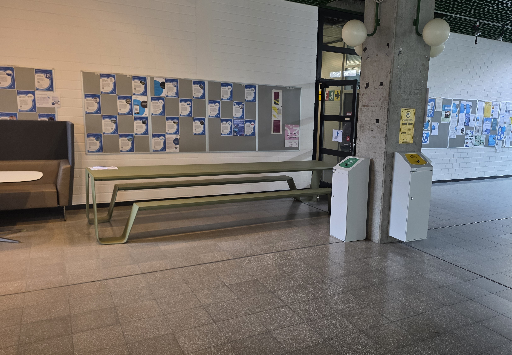

Mitten im Uni-Alltag
Mittwoch
bis Uhr
Am grünen Tisch vor V9.02
Pfaffenwaldring 9, 70569Stuttgart
Gemeinsam die Bibel lesen und beten in der Mittagspause.
Bibeltreff · Stuttgart
„Das Wort Gottes ist lebendig und wirksam.“ Hebräer 4:12
Gemeinsam lesen wir die Bibel und erfahren, wie Gottes Wort in unserem Leben wirkt. Ob du glaubst, suchst oder einfach neugierig bist: Du bist herzlich eingeladen.
01 / Herzliche Einladung
Unter der Woche oder am Sonntag.
Wir freuen uns, dich kennenzulernen.
bis Uhr
Am grünen Tisch vor V9.02
Pfaffenwaldring 9, 70569Stuttgart
Gemeinsam die Bibel lesen und beten in der Mittagspause.
bis Uhr
Handwerkstraße 5 · 4.OG
70565 Stuttgart-Vaihingen
Zusammen den Herrn loben, Erfahrungen teilen und im Glauben wachsen.
bis Uhr
Handwerkstraße 5 · 4.OG
70565 Stuttgart-Vaihingen
Wir nehmen das Mahl des Herrn und beten den Vater an. Anschließend essen wir zusammen zu Mittag.
Der Weg zum Uni-Bibeltreff
Von der S-Bahn-Station Universität sind es nur wenige Meter zum Pfaffenwaldring 9. Im Gebäude treffen wir uns am grünen Tisch vor V9.02 – auf dem Foto siehst du unseren Treffpunkt.

S-Bahn Universität → Pfaffenwaldring 9
Fußweg in Google Maps öffnenZum ersten Mal dabei? Schreib uns gerne vorher.
02 / Das Evangelium in Farben
Von der Sünde zum Ziel Gottes. Sechs Schritte durch die Botschaft der Bibel – und was sie für dich bedeutet.
Wähle eine Farbe oder lies einfach weiter.
Gold steht für Gottes Ziel mit uns Menschen. Er schuf uns ohne Sünde und ihm ähnlich, damit wir in seinem Auftrag gerecht über die Erde herrschen. Wir können uns für eine persönliche Beziehung zu Gott entscheiden und ihn als Vater kennenlernen.
„Und Gott sprach: Lasst uns Menschen machen nach unserem Bild, uns ähnlich; die sollen herrschen auf Erden!“
1. Mose 1:26
„Er hat uns in Liebe vorherbestimmt, seine Söhne zu sein.“
Epheser 1:4–5
Doch der Mensch ließ sich von Satans Lüge verführen. So kam das Böse in uns Menschen. Da ist keiner, der Gutes tut. Wir leben in Sünde und sind von Gott getrennt. Wegen unserer Schuld stehen wir unter Gottes gerechtem Gericht, dem ewigen Feuersee.
„Die alte Schlange, der Teufel, verführt die ganze Erde.“
Offenbarung 12:9
„Alle haben gesündigt und haben Mangel an der Herrlichkeit Gottes.“
Römer 3:23
„Der Lohn der Sünde ist der Tod.“
Römer 6:23
„Dies ist der zweite Tod, der Feuersee.“
Offenbarung 20:14
Weil Gott uns so sehr liebt, gab er seinen Sohn Jesus Christus, um uns zu retten. Jesus war ohne Sünde, doch er nahm unsere Schuld auf sich und starb am Kreuz. Das ist der größte Beweis für Gottes Liebe.
„Gott aber beweist seine Liebe zu uns dadurch, dass Christus für uns gestorben ist, als wir noch Sünder waren.“
Römer 5:8
„Denn so sehr hat Gott die Welt geliebt, dass er seinen einziggeborenen Sohn gab, …“
Johannes 3:16
Jesus Christus allein kann dich von Sünde und Gericht retten. Glaube an ihn, bekenne ihn als deinen Herrn und lass dich taufen! So wirst du gerettet und empfängst ewiges Leben.
„… damit jeder, der an ihn glaubt, nicht verloren gehe, sondern ewiges Leben habe.“
Johannes 3:16
„Wenn du Jesus als Herrn bekennst und glaubst, dass Gott ihn von den Toten auferweckt hat, so wirst du gerettet.“
Römer 10:9
„Wer glaubt und getauft wird, der wird gerettet werden.“
Markus 16:16a
Hast du Jesus aufgenommen, dann wachse in ihm. Lege alle Bosheit ab, nähre dich täglich von Gottes Wort, lass dich mit anderen aufbauen, diene Gott als Priester und bringe ihm geistliche Opfer.
„So legt nun ab alle Bosheit … und verlangt wie Neugeborene nach der reinen Milch des Wortes Gottes, damit ihr durch sie wachst zur Errettung.“
1. Petrus 2:1–2
„… und lasst auch ihr euch aufbauen zum geistlichen Haus, zu einer heiligen Priesterschaft, um geistliche Opfer darzubringen durch Jesus Christus.“
1. Petrus 2:5
Wenn du Jesus folgst und im Glauben zur Reife kommst, erhältst du den höchsten Lohn: Du wirst Gott in seinem kommenden Reich als König und Priester dienen. Jesus kommt bald zurück!
„… und [Jesus] hat sie unserem Gott zu Königen und Priestern gemacht, und sie werden herrschen auf Erden.“
Offenbarung 5:9–10
„Jesus Christus spricht: Siehe, ich komme schnell und mein Lohn ist bei mir, um jedem zu geben, wie sein Werk ist.“
Offenbarung 22:12
03 / Persönlich erlebt
Menschen aus dem Bibeltreff erzählen,
wie sie Jesus Christus erleben.
Als ich das erste Mal in den Bibeltreff gekommen bin, waren Gott und Jesus Christus eine bloße Erkenntnis für mich. Doch ist der Herr Jesus viel mehr als das. In Johannes 14:6, einem Vers, den ihr sicherlich alle kennt, sagt der Herr von sich selbst: „Ich bin der Weg und die Wahrheit und das Leben.“
Dieses Leben hatte ich noch nicht erfahren. Ich hatte die Erkenntnis Gottes und Jesu Christi, aber ich blieb trotzdem derselbe und mein Leben veränderte sich nicht. Ich hatte keine Kraft, Schwachheiten oder Sünde zu überwinden.
Aus Verzweiflung bin ich dann in den Bibeltreff gegangen, da ich selbst nicht mehr weiterwusste. Es war zunächst befremdlich aufgrund meines muslimischen Hintergrunds und da ich noch nie Gemeinschaft mit Christen hatte, die den Glauben wirklich ausleben.
Aber Woche für Woche bin ich wiedergekommen, und es war nicht um der Erkenntnis willen. Jetzt im Nachhinein weiß ich, dass es der Geschmack des Lebens war.
Das ist auch der Fokus im Bibeltreff: wie wir in die Erfahrung des Wortes Gottes kommen. Es geht also nicht um Lehre, Erkenntnis oder Theologie, sondern um das Leben. Um eine lebendige Beziehung mit einem lebendigen Gott.
Die Gemeinschaft und der Aufbau mit den Geschwistern im Bibeltreff haben mich wirklich in die Erfahrung des Wortes hineingebracht. Durch die Anwendung des Wortes aus dem Bibeltreff habe ich zum ersten Mal Gott als den erfahren, der mir Leben und Kraft gibt.
Ich habe mich schließlich ein für alle Mal in den Leib Christi hineintaufen lassen (vgl. 1.Kor. 12:13), und damit beginnt dann die wirkliche Reise des Christenlebens. Durch diesen Prozess hindurch hat sich mein Leben gewandelt, und ich habe durch die Kraft des Herrn Schwachheiten überwunden, die mir zuvor unmöglich schienen.
Ich kann den Herrn nur loben und ihm danken, dass er ein lebendiger und erfahrbarer Gott ist und ich so tolle Geschwister im Glauben kennenlernen durfte.
Ich nahm den Herrn Jesus in mein Leben auf, als ich sechs Jahre alt war. Er gab mir Freude ins Herz. Meine Eltern erzählten mir viel von der Bibel und ich ging gerne in den Gottesdienst.
Als ich Jugendlicher war, nahmen immer mehr andere Interessen zu. Vieles war an sich und zu Beginn nicht schlimm: Handball, Fußball, Freunde, Spaß haben … Doch irgendwann begannen diese Interessen mit Gott zu konkurrieren, ohne dass es mir auffiel.
Mit den vielen Interessen kamen dann auch immer mehr sündige Dinge hinein. Das verhärtete mich immer mehr gegenüber Gott. So besuchte ich immer seltener Gottesdienste, hatte weniger Gemeinschaft und las weniger in der Bibel.
Ich ging immer wieder auf christliche Freizeiten, die mich jedes Mal neu für Gott erweckten. Ich nahm mir vor, mein Leben zu ändern. Doch ich kannte den Weg nicht, dauerhaft mit Gott verbunden zu bleiben. So endete ich schnell wieder im alten, weltlichen und schlussendlich sündigen Leben.
In Gottesdiensten wurde ich immer wieder überführt und versprach Gott, mein Leben zu ändern. Doch es hielt nie lange an. Schnell machte ich wieder alle weltlichen Dinge wie meine Schulkameraden. Dieser scheinbar ewige Kreislauf in meinem Christenleben machte mich nicht zufrieden.
Ich danke Gott, dass er mich nicht aufgegeben hat, obwohl ich es verdient hätte. Er brachte mich in die Umgebung von Menschen, die Jesus wirklich nachfolgen wollten. Sie gaben mir einen Geschmack von einem Leben mit und für Gott. Ich merkte: Dieses Leben ist so viel besser als alles andere. Jemand zeigte mir diesen Vers:
„Ja, ich achte auch alles für Verlust wegen der unübertrefflichen Erkenntnis Christi Jesu, meines Herrn, um dessentwillen ich alle Dinge verloren habe und sie für Abfall achte, damit ich Christus gewinne.“
Philipper 3:8
Nachdem ich zum Studium nach Stuttgart kam, traf ich die Geschwister vom Bibeltreff – gleich am ersten Tag des Mathe-Vorkurses! Durch die Gemeinschaft zeigte mir Gott immer mehr, wie ich es tatsächlich schaffe, jeden Tag ein Leben mit ihm zu führen.
Ich lernte: Die Bibel ist uns als tägliche Speise gegeben! Sie schmeckt gut und stärkt mich zu überwinden! Auch der regelmäßige Austausch mit den anderen und gemeinsames Gebet stärkten mich immer mehr, mein altes, weltliches Leben zu lassen. Es ist so viel besser, durch und mit Christus zu leben.
In der weiteren Gemeinschaft zeigte mir der Herr: Wenn ich beständig mit ihm leben und ihn erfahren möchte, dann muss ich lernen, ihm als Priester zu dienen. Ich lernte, wie ich Christus als die geistlichen Opfer erfahren kann, um ein Gott wohlgefälliges Leben zu führen. Ich bin Gott unendlich dankbar für seine Gnade und seine Offenbarung, die er gibt, wenn wir ihn suchen!
04 / Lass uns kennenlernen
Du möchtest vorbeikommen oder mehr wissen?
Wir freuen uns auf deine Nachricht.